◈ STRANDEDTHE ASTERION INCIDENT
CHAPTER 03 • LIFE SUPPORT
Find a replacement component
Explore the maintenance bay. Look for the salvage crate.
MAINTENANCE BAY DECK C / 01
E
ELARA / STATION AI
Engineer? The turbine is dead. Search the salvage crate. Something in there may still work.
PACK
—

WASD / ↑↓←→ MOVE E INTERACT SHIFT RUN